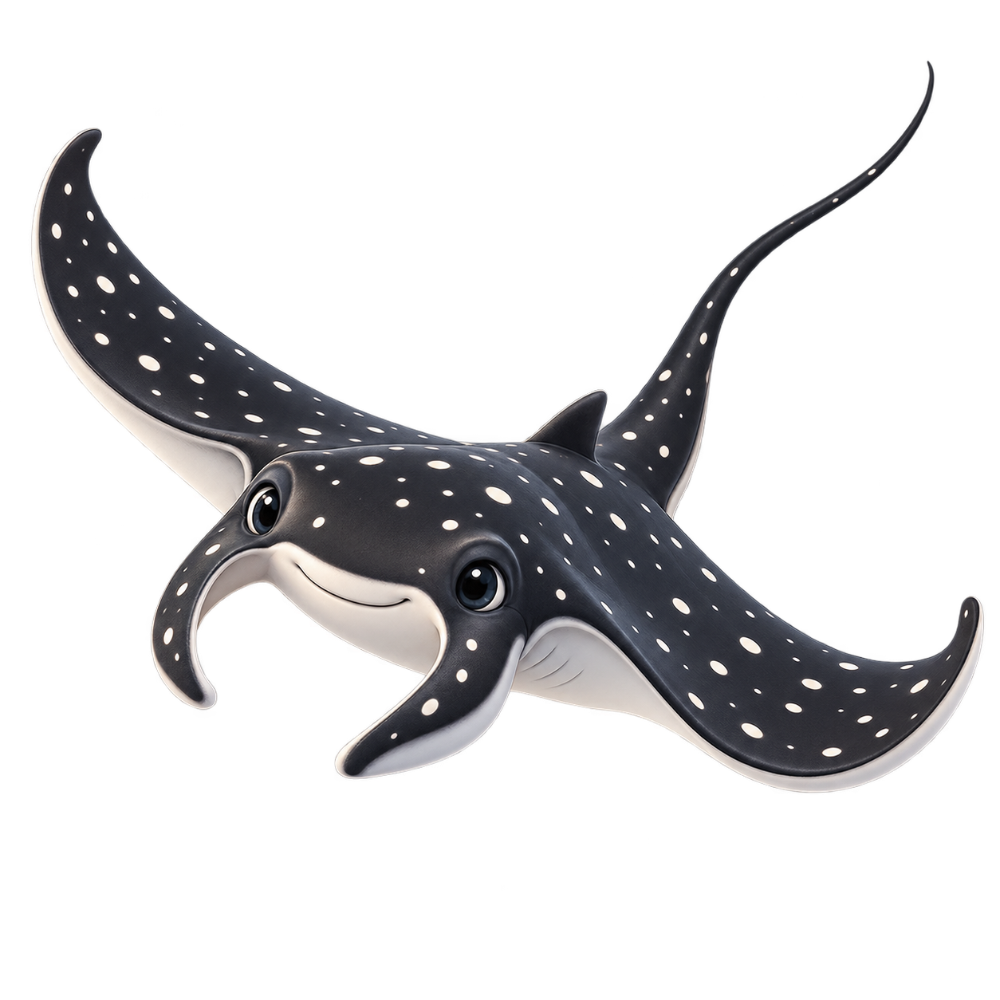
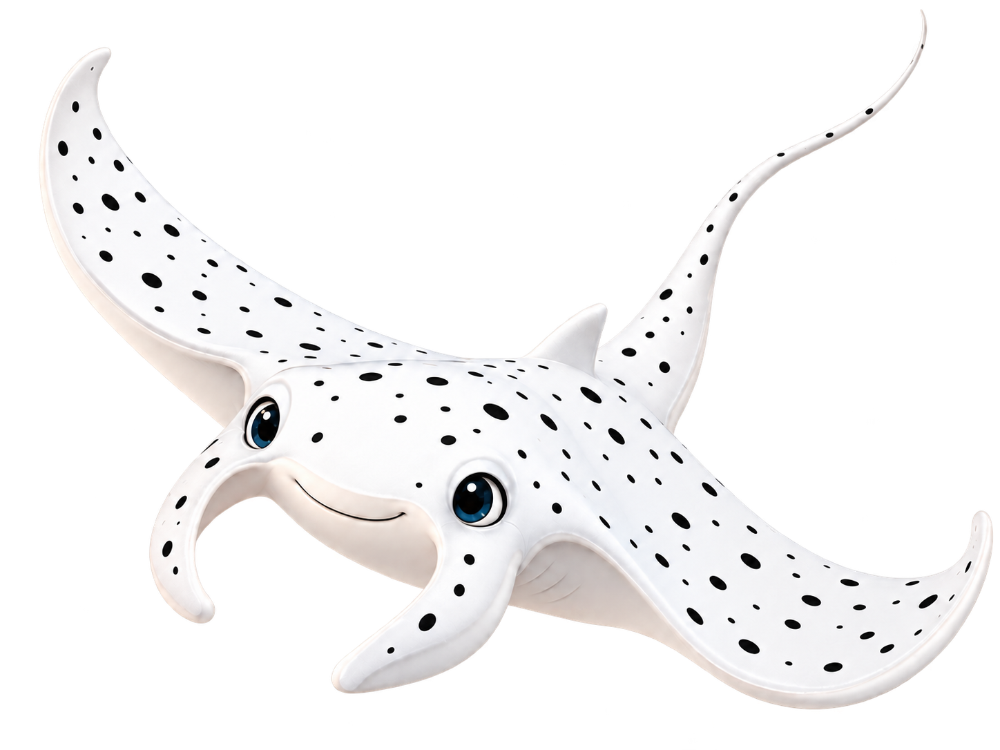

Pedidos registrados◇
00registrados en SQLiteACTIVIDAD
Pedidos y notificaciones
Revisa los últimos ingresos y escucha el reporte completo del asistente.
Última actualizaciónCargando…
Cargando el JSON publicado…
En proceso↙
000% del movimientoEn resguardo↗
00bajo resguardoPedidos terminados✓
000% de avancePedidos entregados◆
000 pendientes de entregaPendientes de entrega◷
00todos los no entregadosPRODUCCIÓN
Estado general de pedidos
0 terminados0 en proceso
Terminados0
En proceso0
Entregados0
ESTATUS
Distribución de pedidos
0pedidos
En proceso0 pedidos
0%En resguardo0 pedidos
0%Terminado0 pedidos
Entregado a cliente0 pedidos
Entregados0 Pendientes de entrega0
ACTIVIDAD RECIENTE
Últimos 5 pedidos ingresados
Se actualizan automáticamente desde el archivo de producción.
Cargando notificaciones…


TONY · ASISTENTE VIRTUAL
Tony te informa
RESUMEN GENERAL
Preparando notificaciones…
MICRÓFONODesactivado
Prueba: “Oye Tony, dime información sobre el pedido 310965” o menciona el nombre del cliente.
Tony responde con volumen suave y también puede leer el reporte completo.
CONSULTA OPERATIVA
Búsqueda avanzada
Consulta los cuatro estatus y localiza cualquier pedido.
RESULTADOS
Pedidos encontrados
| Pedido | Cliente | Movimiento | Operador responsable | Producción | Entrega | Registro |
|---|---|---|---|---|---|---|
| Usa los filtros para consultar pedidos. | ||||||
EQUIPO DE PRODUCCIÓN
Rendimiento general
0 terminados0 en proceso
RESPONSABLES
Detalle por operador
Selecciona “Ver pedidos” para abrir su búsqueda.
Mayor carga de pedidosSin datos0 pedidos
Operadores activos0con pedidos asignados
Pedidos entregados00% del total
CARGA DE TRABAJO
Pedidos por operador
La proporción de cada color muestra quién concentra más pedidos asignados.
0asignados
No hay datos para mostrar.
ESTADO OPERATIVO
Los cuatro estatus de pedidos
Pendientes incluye en proceso, en resguardo y terminados sin entregar.
0pedidos
No hay datos para mostrar.
DETALLE
Estado por operador
Comparación de los cuatro estatus por responsable.